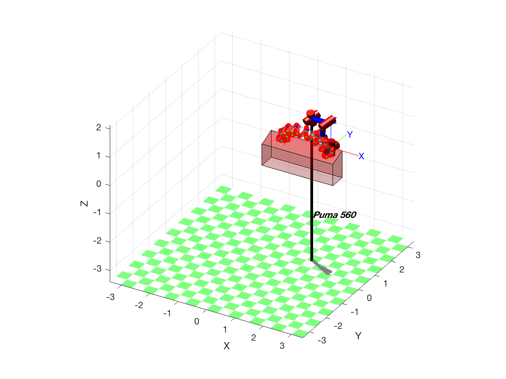

Short Project.
After atending the Laboratory session and Theory classes you must be able to answer the following questions. Add the necessary matlab and RTB sentences to this script for reporting your result. I strongly recoment to use as a reference help for the RTB the file 'robot.pdf' http://petercorke.com/wordpress/toolboxes/robotics-toolbox
Contents
Sketching the enviroment of the robotics work cell.
It is spected: main reference frames. Plot the robot Puma, draw the working table and the torus in working position. Give diferent points of view of the scenary: Top, Front, Lateral and isometrics view
F1 = [0 2.5 2.5 0; 0 0 0.75 0.75; 0 0 0 0; 1 1 1 1]; F1 = trotx(90)*F1; F2 = [0 2.5 2.5 0; 0 0 0.6 0.6; 0 0 0 0; 1 1 1 1]; F2 = transl(0,0,0.75) * trotx(20) * F2; F3 = [0 0.75 0.75 -sin(pi/9)*0.6; 0 0 cos(pi/9)*0.6 cos(pi/9)*0.6; 0 0 0 0; 1 1 1 1]; F3 = transl(0,0,0.75) * troty(90)*F3; F4 = transl(2.5,0,0) * F3; F5 = [0 2.5 2.5 0; 0 0 sin(pi/9)*0.6+0.75 sin(pi/9)*0.6+0.75; 0 0 0 0; 1 1 1 1]; F5 = transl(0,0.6*cos(pi/9),0) * trotx(90) * F5; figure xlabel('x'); ylabel('y'); zlabel('z'); axis 'equal'; fill3(F1(1,:),F1(2,:),F1(3,:),'r',F2(1,:),F2(2,:),F2(3,:),'r', F3(1,:),F3(2,:),F3(3,:),'r', F4(1,:),F4(2,:),F4(3,:),'r', F5(1,:),F5(2,:),F5(3,:),'r'); alpha 0.3 fv=stlread('Torus.stl');% fv is a struct with faces and vertices fv.vertices=fv.vertices; ma=max(fv.vertices); mi=min(fv.vertices); dmami=ma-mi; scale = 0.3/dmami(2); fv.vertices = scale .* fv.vertices [n,~] = size(fv.vertices); fv.vertices = [transpose(fv.vertices); ones(1,n)]; % fv.vertices = scale .* fv.vertices (Scale torus solution) fv.vertices = transl(0.6,0.3*cos(pi/9),(0.75+sin(pi/9)*0.3)) * trotx(-160) * fv.vertices; [m,~] = size(fv.vertices); fv.vertices(m,:)=[]; fv.vertices = transpose(fv.vertices); SS=patch(fv,'FaceColor', [0.8 0.8 1.0], ... 'EdgeColor', 'none', ... 'FaceLighting', 'gouraud', ... 'AmbientStrength', 0.15); % Add a camera light, and tone down the specular highlighting camlight('headlight'); material('dull'); alpha (SS,0.2) view(30,30) % Fix the axes scaling, and set a nice view angle axis('image'); axis 'equal' mdl_puma560 p560.base = transl(1.3, cos(pi/9)*0.3+0.5, 1.65)*trotx(20); p560.links(1, 2).a=1 p560.links(1, 3).a=0.8 p560.plot(qz); hold on; axis([0 5 0 5 0 5]);
fv =
struct with fields:
faces: [668×3 double]
vertices: [2004×3 double]
p560 =
Puma 560 [Unimation]:: 6 axis, RRRRRR, stdDH, fastRNE
- viscous friction; params of 8/95;
+---+-----------+-----------+-----------+-----------+-----------+
| j | theta | d | a | alpha | offset |
+---+-----------+-----------+-----------+-----------+-----------+
| 1| q1| 0| 0| 1.5708| 0|
| 2| q2| 0| 1| 0| 0|
| 3| q3| 0.15005| 0.0203| -1.5708| 0|
| 4| q4| 0.4318| 0| 1.5708| 0|
| 5| q5| 0| 0| -1.5708| 0|
| 6| q6| 0| 0| 0| 0|
+---+-----------+-----------+-----------+-----------+-----------+
base: t = (1.3, 0.782, 1.65), RPY/xyz = (0, 0, 20) deg
p560 =
Puma 560 [Unimation]:: 6 axis, RRRRRR, stdDH, fastRNE
- viscous friction; params of 8/95;
+---+-----------+-----------+-----------+-----------+-----------+
| j | theta | d | a | alpha | offset |
+---+-----------+-----------+-----------+-----------+-----------+
| 1| q1| 0| 0| 1.5708| 0|
| 2| q2| 0| 1| 0| 0|
| 3| q3| 0.15005| 0.8| -1.5708| 0|
| 4| q4| 0.4318| 0| 1.5708| 0|
| 5| q5| 0| 0| -1.5708| 0|
| 6| q6| 0| 0| 0| 0|
+---+-----------+-----------+-----------+-----------+-----------+
base: t = (1.3, 0.782, 1.65), RPY/xyz = (0, 0, 20) deg
Warning: floor tiles too small, making them 2.000000 x bigger - change the size
or disable them
Warning: arrow option requires arrow3 from FileExchange

Working points.
Give here your code to get the variables to locate: a) The reference frame for all drills holes, such that z-axis is orthogonal to the surface of the torus and the x-axis is in the direction of minimun curvature. Draw in scale the frames b) Repeat the obove operation for the center of the milling groove. Draw this frames. c) The reference frames for all welding points, such that z-axis of the tool is orthogonal to the surface of the torus and the x-axis is in the direction of spiral trajectory. Draw in scale the frames
n=8; m=8; px=-0.8;py=0;pz=0;r=0.15;
for i=0:m
for j=1:n
if (i~=8)
Ptos_spiral(:,:,i*n+j)=transl(0.6-px,0.3*cos(pi/9),0.75+sin(pi/9)*0.3)*trotx(20)*troty(180*(i*n+j)/(n*m))*transl(px,py,pz)*trotz(360*j/n)*transl(r,0,0);
Ptos_spiral_welding(:,:,i*n*3+(3*j)-2)=transl(0.6-px,0.3*cos(pi/9),0.75+sin(pi/9)*0.3)*trotx(20)*troty(180*(i*n+j)/(n*m))*transl(px,py,pz)*trotz(360*j/n)*transl(r*3,0,0);
Ptos_spiral_welding(:,:,i*n*3+(3*j)-1)=transl(0.6-px,0.3*cos(pi/9),0.75+sin(pi/9)*0.3)*trotx(20)*troty(180*(i*n+j)/(n*m))*transl(px,py,pz)*trotz(360*j/n)*transl(r,0,0);
Ptos_spiral_welding(:,:,i*n*3+(3*j))=transl(0.6-px,0.3*cos(pi/9),0.75+sin(pi/9)*0.3)*trotx(20)*troty(180*(i*n+j)/(n*m))*transl(px,py,pz)*trotz(360*j/n)*transl(r*3,0,0);
end
end
end
coor_circle=transl(Ptos_spiral)';
plot3(coor_circle(1,:),coor_circle(2,:),coor_circle(3,:),'g','LineWidth',2);
scatter3(coor_circle(1,:),coor_circle(2,:),coor_circle(3,:),'r','fillet');
axis equal
for i=0:m-1
for j=1:4
if (j==1)
Q = p560.ikine6s(transl(Ptos_spiral_welding(:,:,(i*3*m+1):(3*i*m+1)+3*2*j)), 'run');
elseif (j==2)
Q = p560.ikine6s(transl(Ptos_spiral_welding(:,:,(i*3*m+1)+6:(3*i*m+1)+3*2*j-3)), 'run');
elseif (j==3)
Q = p560.ikine6s(transl(Ptos_spiral_welding(:,:,(i*3*m+1)+12-3:(3*i*m+1)+3*2*j+3)), 'lun');
else
Q = p560.ikine6s(transl(Ptos_spiral_welding(:,:,(i*3*m+1)+18+3:(3*i*m+1)+3*2*j-1)), 'ldn');
end
p560.plot(Q);
end
end
(3*(m-1)*m+1)+3*2*4
s=8; c=20; r=0.01; l=0.08; offset=15;
for i=0:s
if(i~=s)
for j=1:c
if(j==c)
Ptos_groove(:,:,i*c+j)=Ptos_groove(:,:,i*c+1);
elseif (j<c/2)
Ptos_groove(:,:,i*c+j)=transl(0.6-px,0.3*cos(pi/9),0.75+sin(pi/9)*0.3)*trotx(20)*troty(90+offset)*transl(cos(degtorad(90+180*i/s))*0.95,0,sin(degtorad(-90+180*i/s))*0.95)*troty(180*i/s)*trotz(90)*trotz(360*j/c)*transl(r,0,0);
else
Ptos_groove(:,:,i*c+j)= transl(0.6-px,0.3*cos(pi/9),0.75+sin(pi/9)*0.3)*trotx(20)*troty(90+offset)*transl(cos(degtorad(90+180*i/s))*0.95,0,sin(degtorad(-90+180*i/s))*0.95)*troty(180*i/s)*trotz(90)*transl(0,-l,0)*trotz(360*j/c)*transl(r,0,0);
end
end
Ptos_groove_mill(:,:,(4*i)+1) = transl(0.6-px,0.3*cos(pi/9),0.75+sin(pi/9)*0.3)*trotx(20)*troty(90+offset)*transl(cos(degtorad(90+180*i/s))*1.2,0,sin(degtorad(-90+180*i/s))*1.2)*troty(180*i/s)*trotz(90);
Ptos_groove_mill(:,:,(4*i)+2) = transl(0.6-px,0.3*cos(pi/9),0.75+sin(pi/9)*0.3)*trotx(20)*troty(90+offset)*transl(cos(degtorad(90+180*i/s))*0.95,0,sin(degtorad(-90+180*i/s))*0.95)*troty(180*i/s)*trotz(90);
Ptos_groove_mill(:,:,(4*i)+3) = transl(0.6-px,0.3*cos(pi/9),0.75+sin(pi/9)*0.3)*trotx(20)*troty(90+offset)*transl(cos(degtorad(90+180*i/s))*0.95,0,sin(degtorad(-90+180*i/s))*0.95)*troty(180*i/s)*trotz(90)*transl(0,-l,0);
Ptos_groove_mill(:,:,(4*i)+4) = transl(0.6-px,0.3*cos(pi/9),0.75+sin(pi/9)*0.3)*trotx(20)*troty(90+offset)*transl(cos(degtorad(90+180*i/s))*1.2,0,sin(degtorad(-90+180*i/s))*1.2)*troty(180*i/s)*trotz(90)*transl(0,-l,0);
end
end
coor_groove = transl(Ptos_groove)';
coor_groove_mill = transl(Ptos_groove_mill)';
for i=0:7
plot3(coor_groove(1,i*c+1:(i+1)*c),coor_groove(2,i*c+1:(i+1)*c),coor_groove(3,i*c+1:(i+1)*c),'b','LineWidth',1);
end
for i=0:7
if (i < 4)
Q = p560.ikine6s(transl(Ptos_groove_mill(:,:,(i*4+1):(i+1)*4)), 'run');
else
Q = p560.ikine6s(transl(Ptos_groove_mill(:,:,(i*4+1):(i+1)*4)), 'luf');
end
p560.plot(Q);
end
s=8; c=40; r=0.02; offset=13.5;
for i=0:s
if(i~=s)
for j=1:c
Ptos_circle(:,:,i*c+j)=transl(0.6-px,0.3*cos(pi/9),0.75+sin(pi/9)*0.3)*trotx(20)*troty(90+offset)*transl(cos(degtorad(90+180*i/s))*0.8,0.15,sin(degtorad(-90+180*i/s))*0.8)*trotx(90)*trotz(360*j/c)*transl(r,0,0);
end
Ptos_circle_drill(:,:,(3*i)+1) = transl(0.6-px,0.3*cos(pi/9),0.75+sin(pi/9)*0.3)*trotx(20)*troty(90+offset)*transl(cos(degtorad(90+180*i/s))*0.8,0.2,sin(degtorad(-90+180*i/s))*0.8)*trotx(90);
Ptos_circle_drill(:,:,(3*i)+2) = transl(0.6-px,0.3*cos(pi/9),0.75+sin(pi/9)*0.3)*trotx(20)*troty(90+offset)*transl(cos(degtorad(90+180*i/s))*0.8,0.15,sin(degtorad(-90+180*i/s))*0.8)*trotx(90);
Ptos_circle_drill(:,:,(3*i)+3) = transl(0.6-px,0.3*cos(pi/9),0.75+sin(pi/9)*0.3)*trotx(20)*troty(90+offset)*transl(cos(degtorad(90+180*i/s))*0.8,0.2,sin(degtorad(-90+180*i/s))*0.8)*trotx(90);
end
end
coor_circle = transl(Ptos_circle)';
% coor_circle_drill = transl(Ptos_circle_drill)';
for i=0:7
plot3(coor_circle(1,i*c+1:(i+1)*c),coor_circle(2,i*c+1:(i+1)*c),coor_circle(3,i*c+1:(i+1)*c),'b');
end
for i=0:7
if (i < 4)
Q = p560.ikine6s(transl(Ptos_circle_drill(:,:,(i*3+1):(i+1)*3)), 'run')
else
Q = p560.ikine6s(transl(Ptos_circle_drill(:,:,(i*3+1):(i+1)*3)), 'run')
end
p560.plot(Q);
end
%scatter3(coor_circle_drill(1,:),coor_circle_drill(2,:),coor_circle_drill(3,:),'g','LineWidth',1);
axis equal
ans = 193 Q = -2.2929 0.5440 3.6730 0.3104 2.3084 2.4747 -2.2558 0.5433 3.7091 0.2903 2.2843 2.4186 -2.2929 0.5440 3.6730 0.3104 2.3084 2.4747 Q = -2.1645 0.9105 3.4644 0.2368 2.1879 2.2748 -2.1293 0.9019 3.5063 0.2202 2.1629 2.2260 -2.1645 0.9105 3.4644 0.2368 2.1879 2.2748 Q = -1.8600 1.2726 3.3010 0.1097 2.0428 1.8935 -1.8383 1.2469 3.3507 0.1006 2.0212 1.8668 -1.8600 1.2726 3.3010 0.1097 2.0428 1.8935 Q = -1.3372 1.5055 3.2384 -0.0832 1.8786 1.3256 -1.3574 1.4603 3.2922 -0.0759 1.8716 1.3474 -1.3372 1.5055 3.2384 -0.0832 1.8786 1.3256 Q = -0.8376 1.4253 3.3101 -0.2376 1.8054 0.8122 -0.8901 1.3891 3.3593 -0.2231 1.8047 0.8678 -0.8376 1.4253 3.3101 -0.2376 1.8054 0.8122 Q = -0.5687 1.1365 3.4784 -0.3044 1.8492 0.5112 -0.6211 1.1175 3.5199 -0.2929 1.8430 0.5699 -0.5687 1.1365 3.4784 -0.3044 1.8492 0.5112 Q = -0.4482 0.7981 3.6887 -0.3360 1.9333 0.3498 -0.4949 0.7886 3.7245 -0.3265 1.9233 0.4049 -0.4482 0.7981 3.6887 -0.3360 1.9333 0.3498 Q = -0.4030 0.4619 3.9062 -0.3587 2.0302 0.2611 -0.4465 0.4573 3.9388 -0.3492 2.0183 0.3150 -0.4030 0.4619 3.9062 -0.3587 2.0302 0.2611
Computing motor torques for the static forces.co
Give here your code to fill two tables with the motor torque at each robot pose: Table 1 (6x16): Rows are the motor torques (6x1). Columns (1x16) are the labeled drills including the initial drill before milling. Table 2 (6x8): Rows are the motor torques (6x1). Columns (1x8) are the labeled milling of the groove.